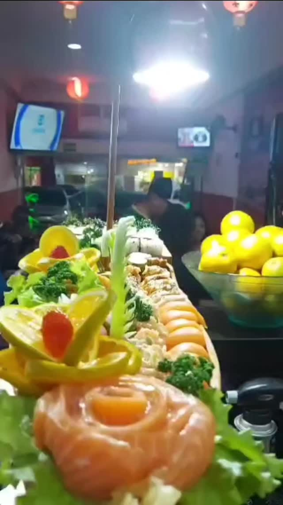

Sem Miséria
O Temaki Aberto
Alga crocante com cubos generosos de salmão até o topo, cebolinha e cream cheese na proporção certa.
Em São Bernardo do Campo existe um restaurante discreto onde o salmão é cortado farto na hora, o preço parece de outra década e as 330 pessoas que avaliaram concordam: a nota condiz com o prato.


"Normalmente eu vou a restaurantes com boas avaliações aqui no Google, e posso dizer que a nota condiz com os pratos e atendimento."
"Confesso que o ambiente não é elaborado, mas a boa comida vale a pena."
Nós não investimos em mármore, iluminação de arquiteto ou influenciadores pagos. Cada centavo do que você paga vai diretamente para o lombo de salmão fresco e para o shimeji quente que chega na sua mesa sem economia.
Três testemunhas visuais do que é servido diariamente na Rua Afonsina. Sem cenografia, exatamente como chega na sua mesa.
Alga crocante com cubos generosos de salmão até o topo, cebolinha e cream cheese na proporção certa.

Selado na chama viva com molho tarê caramelizado e gergelim tostado. Quente, macio e farto.

Hot roll crocante com doce de leite e morangos frescos com geleia artesanal para encerrar a mesa.
Quem descobre o Sushi LM guarda o endereço. Clique abaixo para registrar que você encontrou o restaurante e liberar a recomendação de quem já frequenta.